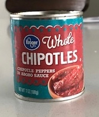
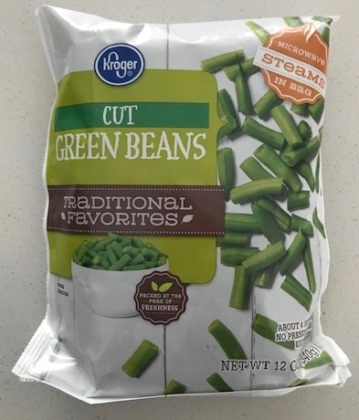
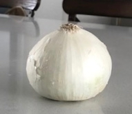
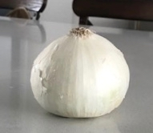

Teriyaki Chicken Bowls
Cook chicken
- In Instapot or pressure cooker, add
- 1 lb of chicken
- chicken broth until chicken is nearly covered
- teriyaki sauce to taste, around 1/2 cup
- 3 tbsp of taco seasoning
- Mix ingredients until distributed evenly
- Cook 25 minutes under pressure
Cook Rice
- In a rice cooker, add
- 2 cups rice (I usually use medium grain white rice)
- 4 cloves minced garlic (or 2 tbsp garlic powder)
- water to preferred moisture, around 2.25 cups
- 3 drops of lemon juice
- Start the rice cooking
Cook Vegatables
- Add 4 tbsp of vegetable oil to a cast iron skillet and bring to medium heat
- Once the pan is hot, add
- 1 cup roughly chopped peppers
- 1 roughly chopped white onion
- Stir occasionally until the onion is wilted then add
- Add 2 - 3 finely minced chipotle peppers
- 6 oz frozen cut green beans
- Cook until green beans are done to taste and reduce to low head until chicken is done cooking
Combine and Serve
- When the chicken is done, roughly chop and mix into the cast iron skillet
- Add skillet mixture over a bowl of rice and enjoy


 
